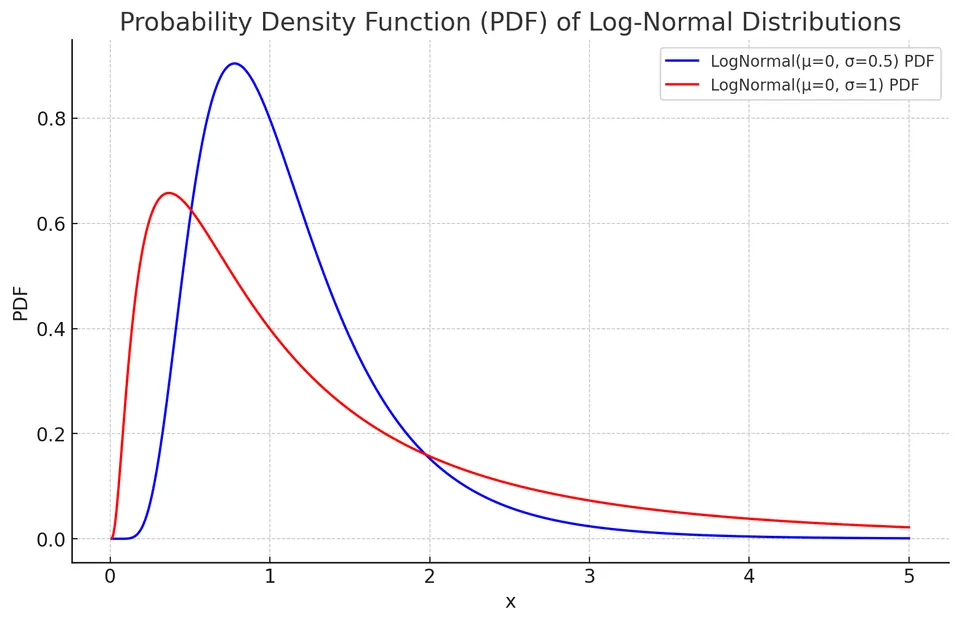
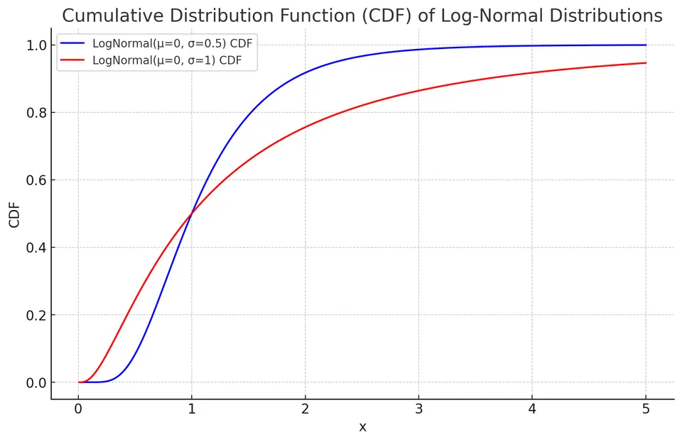

Log-Normal Distribution
A positive random variable is log-normal when its natural logarithm is normal:
$$ Y=\ln X\sim\mathcal N(\mu,\sigma^2),\qquad X=e^Y, $$
where $\mu\in\mathbb R$ and $\sigma>0$. Write $X\sim\mathrm{LogNormal}(\mu,\sigma^2)$. These parameters describe the log scale: $\mu$ is not the mean of $X$, and $\sigma$ is not its original-scale standard deviation.
The model is natural when several positive multiplicative effects combine, since logarithms turn a product into a sum. It is right-skewed and assigns no probability to zero or negative values. A positive variable is not automatically log-normal; its log-scale distribution must support that modeling assumption.
Deriving the density
The transformation $y=\ln x$ has derivative $dy/dx=1/x$. The normal density on the log scale must therefore be multiplied by $1/x$ when expressed on the original scale:
$$ f(x;\mu,\sigma)=\frac{1}{x\sigma\sqrt{2\pi}} \exp\left(-\frac{(\ln x-\mu)^2}{2\sigma^2}\right),\qquad x>0. $$
The factor $1/x$ accounts for the changing interval widths under logarithms. Omitting it would not produce a normalized density for $X$.

CDF and probabilities
Because the logarithm is increasing, the event $X\le x$ is equivalent to $Y\le\ln x$. Standardizing on the normal scale gives
$$ F(x;\mu,\sigma)=\Phi\left(\frac{\ln x-\mu}{\sigma}\right),\qquad x>0, $$
where $\Phi$ is the standard normal CDF. Equivalently,
$$ F(x;\mu,\sigma)=\frac12+\frac12\mathrm{erf} \left(\frac{\ln x-\mu}{\sigma\sqrt2}\right). $$
For $x\le0$, $F(x)=0$. An interval probability is a difference of two CDF values, and the quantile at probability $q$ is $\exp[\mu+\sigma\Phi^{-1}(q)]$.

Mean, median, and variance
Since $X^m=e^{mY}$, the normal MGF evaluated at $m$ gives
$$ E[X^m]=\exp\left(m\mu+\frac{m^2\sigma^2}{2}\right). $$
Setting $m=1$ gives the mean:
$$ E[X]=\exp\left(\mu+\frac{\sigma^2}{2}\right). $$
The median is $e^\mu$, because half the log-scale normal probability lies below $\mu$. The mean is larger: the long upper tail pulls the arithmetic average upward. Exponentiating a log-scale mean therefore gives an original-scale median, not the original-scale mean.
Using $E[X^2]$ and subtracting $(E[X])^2$ gives
$$ \mathrm{Var}(X)=\left[e^{\sigma^2}-1\right]e^{2\mu+\sigma^2}. $$
All positive integer moments are finite, but the log-normal MGF $E(e^{tX})$ is infinite for $t>0$. Having every power moment is not sufficient for an MGF to exist in a neighborhood of zero.
Example: an illustrative stock-price scale
Suppose a stock's closing price at the date being modeled is expressed relative to a fixed price unit, and its logarithm has mean $\mu=0$ and standard deviation $\sigma=0.1$. This specifies a one-date distribution; it does not by itself specify dependence between daily prices.
Expected price
$$ E[X]=\exp\left(0+\frac{0.1^2}{2}\right)\approx1.005. $$
The modeled median is 1 price unit, while the mean is about 1.005 units because of the right tail.
Price variance
$$ \mathrm{Var}(X)=\left[e^{0.1^2}-1\right]e^{2(0)+0.1^2} \approx0.0102. $$
The unrounded variance is about 0.0101512 in squared price units. If the chosen price unit represents 100 currency units, both the mean and the variance must be rescaled: multiply the mean by 100 and the variance by $100^2$.
Applications
Log-normal models are used for some prices, incomes, pollutant concentrations, and lifetimes when a normal model on the log scale is plausible. They represent multiplicative variability and positive skew, but should not be selected solely because observations are positive.
Practice: Exercises with worked solutions